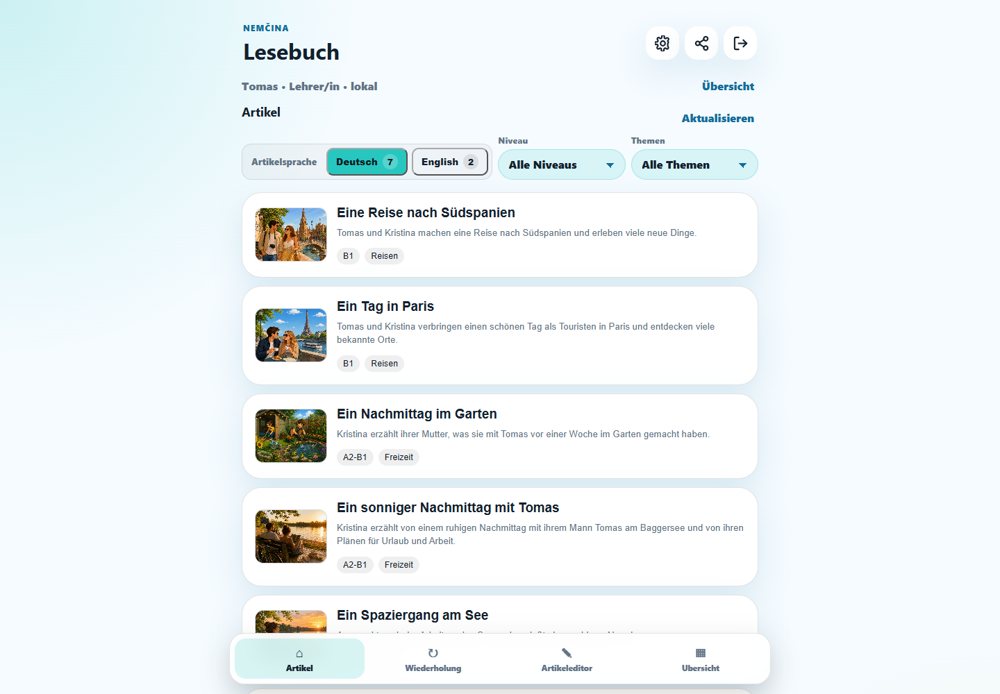
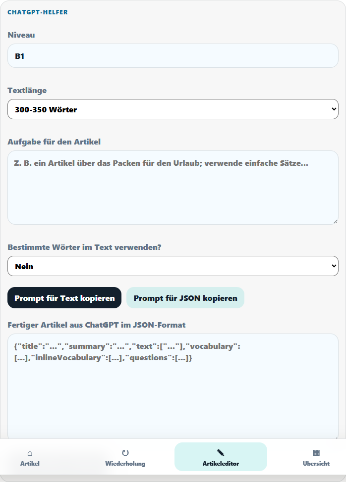

A2 · ALLTAGEin kleines Frühstück
Kurze Texte machen den Einstieg leicht.
Wähle einen Text
Entdecke kurze Artikel zu Alltag, Reisen und Freizeit für jedes Sprachniveau.
DEUTSCH LERNEN, INDEM DU LIEST
Lies kurze deutsche Artikel, übersetze unbekannte Wörter direkt im Text und wiederhole sie später – alles in einer App.


LESEN, VERSTEHEN, BEHALTEN
Lesebuch verbindet den Text mit Übersetzung und Wiederholung. So bleibt die Geschichte im Mittelpunkt – und der Wortschatz wächst nebenbei.
SO FUNKTIONIERT’S
Kurze Texte machen den Einstieg leicht.
Entdecke kurze Artikel zu Alltag, Reisen und Freizeit für jedes Sprachniveau.
Wir möchten eine kleine Stadt .
Lass dir ein Wort oder den ganzen Satz in deiner Muttersprache anzeigen.
Angeklickte Wörter warten in einer kurzen Wiederholung auf dich.
EIGENE TEXTE MIT KI ERSTELLEN
Im Artikeleditor bestimmst du Niveau, Länge, Thema und gewünschte Wörter. Lesebuch bereitet daraus einen passenden Prompt für ChatGPT vor und übernimmt den fertigen Artikel anschließend als strukturiertes JSON.
Wähle Sprachniveau und Textlänge und beschreibe das gewünschte Thema.
Lesebuch erstellt einen Prompt für Text oder JSON – auf Wunsch mit bestimmten Wörtern.
Füge das Ergebnis aus ChatGPT ein und bearbeite den Artikel direkt in Lesebuch weiter.
Eine Reise nach Südspanien
MEHR ALS NUR LESEN
Prüfe direkt, was du verstanden hast.
Festige neue Begriffe mit kleinen Übungen.
Lehrende können Artikel zuweisen und den Status verfolgen.
IN DEINER SPRACHE
BEREIT FÜR DEN NÄCHSTEN TEXT?
Öffne Lesebuch im Browser und beginne mit deinem ersten Artikel.
Lesebuch öffnen